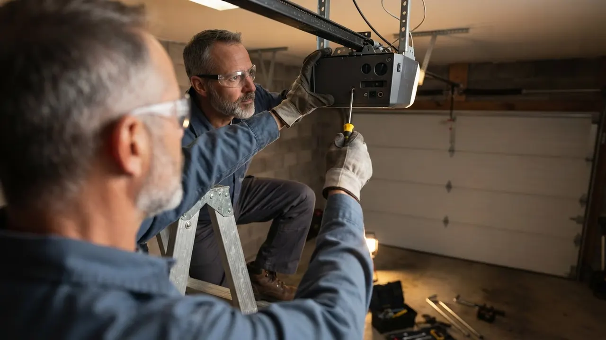

Local Garage Door Repair for Wilmington
Garage Door Repair Wilmington DE You Can Count On
When your door jams halfway up or a torsion spring snaps, you need Garage Door Repair Wilmington DE that shows up fast. We stock LiftMaster and Chamberlain openers, torsion springs, and galvanized cables on every truck, so most repairs are finished in one visit. Call (302) 556-5080 and we will get your door moving today.
Local supportWilmington
Share the job details and we will help identify the right next step.
Check availability4.7Average review rating
16Years in business
20Local areas covered
WilmingtonProudly local
Clear arrival windowsWritten service plansCareful property protectionPrepared local crewsOne point of contact
Meet the local team
Garage Door Repair Wilmington DE Since 2010
Delaware Express Garage Door Service has handled Garage Door Repair Wilmington DE homeowners and property managers can rely on since 2010. That is 16 years of broken torsion springs, snapped cables, dead opener motors, and doors knocked off track by a backing-out driver. We work out of Wilmington and cover New Castle County, so a truck is usually close when you call.
What separates us is parts on the truck and techs who diagnose before they sell. We carry LiftMaster, Genie, and Linear openers, plus Clopay and Amarr panels, so you are not waiting three days on a warehouse order. From Trolley Square to Browntown to the Riverfront, we have worked the older wood doors and the newer insulated steel ones. If you have been searching for a garage door company near me Wilmington, start here.

Treat the property like it belongs to someone you love.
Delaware Express Garage Door ServiceWays we can help
Garage Door Repair and Service We Handle
One truck, one visit, one fixed door. We handle everything from a stripped opener gear to a full custom door install, and we do it across Wilmington and New Castle County. If you need 24/7 garage door repair Wilmington DE because the door will not close and the house is open, call and we will roll.
Explore every service01
Garage Door Repair
Our core service covers whatever is keeping your door from running smooth: binding tracks, worn rollers, a dead motor, or a door that slams down. We diagnose on site, quote the fix, and finish most jobs the same day across Wilmington.
View service 02Garage Door Installation
New door going in? We set the tracks level, tension the springs to the door weight, and dial in the opener travel so it runs quiet from day one. Steel, wood, and insulated doors installed for Wilmington homes and small commercial bays.
View service 03Garage Door Opener Repair
A humming opener that will not lift usually means a stripped gear or a bad capacitor, not a whole new unit. We repair LiftMaster, Chamberlain, Genie, Craftsman, and Marantec openers and only replace what failed.
View service 04Garage Door Opener Installation
We install belt-drive and chain-drive openers with the safety eyes wired to UL 325 spec. If your ceiling is low or the header is tight, we will tell you which unit fits before we cut anything.
View service 05Garage Door Spring Repair
A broken torsion spring is the number one call we get. We match the wire gauge and cycle rating to your door, wind it with proper bars, and test the balance so the opener is not doing the lifting.
View service 06Garage Door Cable Repair
Snapped cables whip and can drop a door fast. We replace both galvanized steel cables as a pair, check the drums for wear, and reset the tension so it does not happen again next month.
View serviceA practical standard for every visit.
Clear planningPrepared arrivalsCareful workLocal follow-through
What the plan includes
Good service should feel considered.
Torsion springs, galvanized cables, nylon rollers, and common LiftMaster and Genie openers ride on every truck. That means most repairs are done in one visit instead of two, and you are not waiting on a warehouse order to get your door back.
We have been fixing doors here since 2010, so we know the older wood doors in The Highlands and the newer steel doors near the Riverfront. We are a Delaware contractor and we work to DASMA and UL 325 standards on every install and repair.
You get a price before we start, and it does not change because the job took an extra hour. If you have been hunting for affordable garage door repair Wilmington, call and we will quote the work over the phone when we can.
Need a quick answer?Talk with the local team.(302) 556-5080
Why people choose us
Why Wilmington Calls Us For Garage Door Repair
We are not the biggest outfit in Delaware, and that is on purpose. A smaller crew means the person who answers the phone knows the job, and the tech who shows up has the parts to finish it. Here is what that looks like in practice.
Clear starting points
Garage Door Repair Pricing
Every door is different, so we quote after we see it. These are typical 2026 ranges for the most common jobs in Wilmington. You get the number before we touch a tool, and the price does not move once we start.
Tune-Up & Adjust
flat rate$129-$189
- Lube rollers, hinges, and springs
- Balance and tension check
- Safety reverse test
- Track bolt tightening
Spring & Cable Job
typical job$260-$450
- Replace torsion or extension springs
- New galvanized steel cables
- Drum and bearing inspection
- Full cycle test and balance
Opener & Panel Rebuild
per project$480-$900
- New opener motor or drive kit
- Panel or section replacement
- Remote and keypad programming
- Track realignment and safety test
How service works
How A Repair Call Works
No mystery, no runaround. Here is exactly what happens from the time you call until the door is running again.
STEP 01
Call Or Book
You call (302) 556-5080 and tell us what the door is doing. We ask a few questions, give you a window, and send a tech with the parts that job usually needs.
Problems we solve
Garage Door Problems We Fix In Wilmington
Most calls come down to a handful of failures. Here is what we see most and how we handle it.
Door will not open and the opener just hums
That hum is usually a stripped gear or a dead capacitor, not a whole new opener. We pull the cover, replace the gear and sprocket kit or the capacitor, re-grease the drive, and test the travel. Most of these are fixed the same visit.
Loud bang from the garage and the door will not lift
That is a broken torsion spring. We match the wire gauge and cycle rating to your door, wind the new spring with proper bars, and rebalance the door so the opener is not straining. Do not run the opener until it is fixed.
Door reverses for no reason or will not close
Nine times out of ten it is the safety sensors. We check alignment, clean the lenses, test the wiring, and confirm the reverse works to UL 325 spec. If a sensor is dead, we replace it on the spot.
Door came off track after backing into it
An off-track door is dangerous, so we secure it first. Then we inspect the rollers, brackets, and track, straighten or replace what bent, and reset the door so it rolls true. We test the full cycle before we leave.


Notes from local customers
What Wilmington Customers Say
Our torsion spring snapped on a Sunday morning and the door was stuck open. They came out the same day, had the right spring on the truck, and had us closing again by early afternoon. Fair price and no upsell on a new opener.
I called three places and these guys were the only ones who could come out that day. The tech showed me the stripped gear and replaced just that instead of selling me a whole new motor. Door runs quieter than it has in years.
We manage a few rental properties near the Riverfront and use them for all the garage calls. They are quick, they text when they are on the way, and the invoices are clear. That is all I need.
Good work on the cable replacement, though they were about an hour later than the window they gave me. Once the tech got here he was fast and explained everything. Door has been fine since.
Our bottom seal was shot and water was getting in every storm. They replaced the seal and the weather stripping and also tightened up a loose track bracket I did not even know was an issue. Garage stays dry now.
Local teams, familiar routes
Garage Door Service Across Wilmington
We cover the whole city and the surrounding county, from the older streets near Brandywine Village to the newer builds out toward Prices Run. If you are in New Castle County and need a garage door company Wilmington DE homeowners actually recommend, we are close by. Here is where we work most.
View every service areaWhere we work
One local team. A lot of ground covered.
Downtown WilmingtonRiverfrontThe HighlandsTrolley SquareForty AcresBaynard VillageWawaset ParkCool SpringTrinity VicinityBrowntownLittle ItalyUnion Park Gardens
Check my address Before the visit
Garage Door Repair Wilmington DE Questions
The questions we get most, answered straight.
Still wondering?(302) 556-5080
Most repairs in Wilmington run $129 to $450 in 2026. A tune-up and adjustment is around $129 to $189, a spring or cable job typically lands between $260 and $450, and a bigger job like an opener and panel rebuild can run $480 to $900. You get the price before we start.
The best garage door company in Wilmington, Delaware is the one that shows up when it says it will and fixes the door right the first time. We have been doing this here since 2010, we stock parts on every truck, and we quote before we work. Call (302) 556-5080 and judge for yourself.
Yes. We run emergency calls around the clock for doors stuck open, doors off track, and snapped cables. Call (302) 556-5080 any time and we will get a tech headed your way, usually fast since we work out of Wilmington and cover New Castle County.
Look for a Delaware contractor who is insured, stocks parts on the truck, and quotes the job before starting. Ask whether they work to UL 325 and DASMA standards, and whether they repair openers instead of only replacing them. Those four things separate a real tech from a sales call.
Yes, and we handle it. If your door will not close, is hanging off the track, or a spring just snapped, call (302) 556-5080. We secure the door first, then repair it. Emergency calls are common for us in winter when cold snaps freeze hinges and stress old springs.
Your next step is waiting
Need Garage Door Repair Wilmington DE Today?
Broken spring, dead opener, or a door off track? Call (302) 556-5080 and we will get a tech out to you. Same-day service across Wilmington and New Castle County, with the parts already on the truck.
Start with the basics
Call For Garage Door Service
Call (302) 556-5080 and tell us what your door is doing. We answer during business hours and run emergency calls after hours. Most days we can get a tech to you the same day, and we will give you a window, not a maybe.